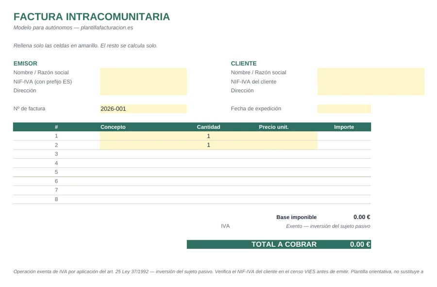

Inicio/Modelos/Operaciones intracomunitarias
Modelo de referencia
Plantilla de factura para operaciones intracomunitarias
Para cuando facturas a una empresa o autónomo de otro país de la Unión Europea: sin IVA, con inversión del sujeto pasivo y la mención legal obligatoria.
Modelo de referencia. Disponible en Excel (.xlsx) y en PDF para imprimir o enviar.

Requisitos para que sea una operación intracomunitaria
- Estar inscrito en el ROITanto tú como tu cliente debéis figurar en el Registro de Operadores Intracomunitarios (ROI) y tener NIF-IVA (VIES).
- Cliente en otro país de la UEEl cliente debe ser una empresa o profesional (no un particular) establecido en otro estado miembro.
- Verificar el NIF-IVAConviene comprobar el NIF-IVA del cliente en el censo VIES antes de emitir la factura.
Cómo se factura: sin IVA
En estas operaciones no se repercute IVA español. En su lugar, se aplica la inversión del sujeto pasivo: es el cliente, en su propio país, quien autoliquida el IVA correspondiente según su normativa local. Tu factura debe incluir una mención expresa a esto. La redacción cambia según el tipo de operación:
Entrega de bienes: «Operación exenta de IVA por aplicación del artículo 25 de la Ley 37/1992. Inversión del sujeto pasivo.»
Prestación de servicios: «Operación no sujeta a IVA en España por las reglas de localización (artículo 69 de la Ley 37/1992). Inversión del sujeto pasivo.»
Depende de lo que factures. La exención del artículo 25 se refiere a las entregas de bienes a otro Estado miembro. Cuando se prestan servicios a una empresa de la UE, la operación se entiende realizada en el país del cliente y la factura lleva la mención de inversión del sujeto pasivo. Si no tienes claro cuál es tu caso, confirma la redacción con un gestor.
Qué debe llevar además de lo habitual
- Tu NIF-IVACon el prefijo ES delante (ej. ESX12345678).
- NIF-IVA del clienteCon el prefijo de su país (ej. FR, DE, IT...).
- Mención de exenciónLa referencia legal a la inversión del sujeto pasivo, como en los ejemplos de arriba.
Además, estas operaciones se declaran en el modelo 349 (declaración recapitulativa de operaciones intracomunitarias), independientemente de tu declaración trimestral de IVA habitual.
Modelo orientativo. Esta plantilla es un punto de partida y no sustituye el asesoramiento de un gestor. Adáptala a tu actividad y a tu situación fiscal.
Ejemplo resuelto: servicio a una empresa alemana
Un desarrollador autónomo en España diseña una web para una empresa de Alemania por 2.000 €. Antes de facturar hay que comprobar que ambos están en el ROI y validar el NIF-IVA alemán (empieza por «DE») en VIES.
| Concepto | Importe |
|---|---|
| Base imponible | 2.000,00 € |
| IVA | 0,00 € (inversión del sujeto pasivo) |
| Mención obligatoria | Operación no sujeta a IVA en España por las reglas de localización (art. 69 Ley 37/1992). Inversión del sujeto pasivo. |
| Total a cobrar | 2.000,00 € |
Estas operaciones también se declaran en el modelo 349 (declaración recapitulativa de operaciones intracomunitarias), con la periodicidad que te corresponda.
Errores típicos con clientes de la UE
- Cobrar IVA español a una empresa de otro país de la UE con NIF-IVA válido.
- No comprobar el NIF-IVA del cliente antes de facturar.
- Olvidar la mención de inversión del sujeto pasivo o el modelo 349.